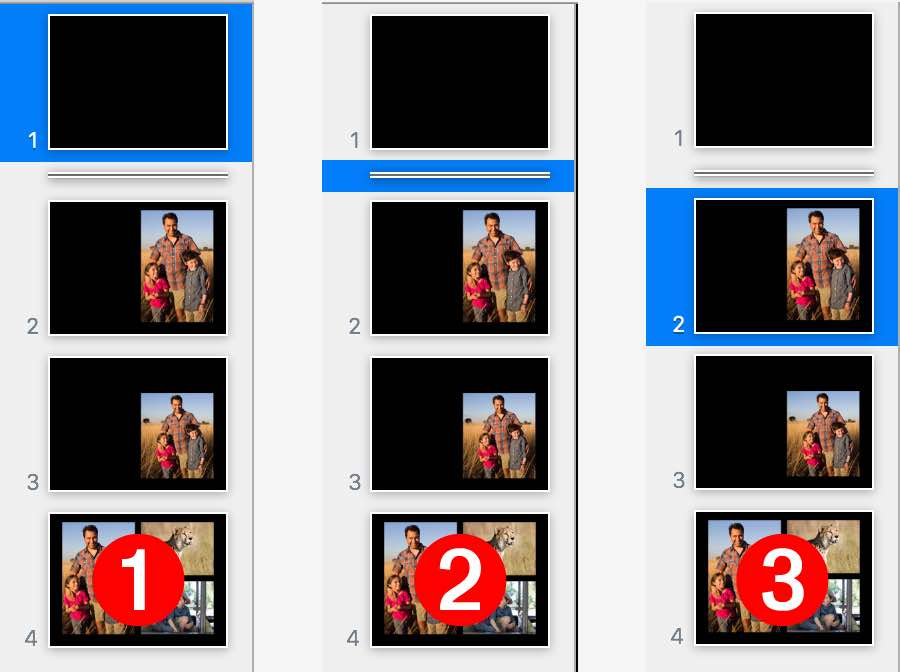

In addition to opening, creating, editing, and closing Keynote documents, Keynote scripting support includes the ability to control the playback of presentations, using the following commands excerpted from the Keynote Compatibility Suite:
start v : Start playing the presentation.
start document : The document to play.
[ from slide ] : The slide at which to start playing.
stop v : Stop playing the presentation.
stop document : The document to stop.
show next v : Advance one build or slide.
show next
show previous v : Go to the previous slide.
show previous
Here’s an example script that uses some the playback commands to play, advance, and stop a very short presentation:
TIP: For a more complex playback example that involves a script presenting a document while speaking its presenter notes, check out the Simple Play and Say script on the Presenter Notes page.
Hands-Free Playback Control Scripts
Scripts can be used to control the playing of Keynote documents in many scenarios, such as on a schedule or remotely. Using the intrinsic application properties outlined in the Application section of this documentation, a script can “sense” the current running and playback status of the Keynote application and act accordingly.
The following script will only execute its command if the Keynote application is already running. Running this script will not cause Keynote to activate if it is not already open.
And a script for presenting the front document. It will start the presentation only if Keynote is open with a document open. The script will not execute its command if Keynote is already playing a document:
Moving to a Specific Slide
As of Keynote 7.1, you can now set the value of the current slide property of a document.
| 1) Set the Current Slide | ||
| Open in Script Editor | ||
| 01 | tell application id "com.apple.iWork.Keynote" | |
| 02 | activate | |
| 03 | tell the front document | |
| 04 | set the current slide to the first slide | |
| 05 | end tell | |
| 06 | end tell | |
Be aware that the index of slide does not take into account whether a slide is skipped or not:
| 2) Set the Current Slide | ||
| Open in Script Editor | ||
| 01 | tell application id "com.apple.iWork.Keynote" | |
| 02 | activate | |
| 03 | tell the front document | |
| 04 | set the current slide to slide 2 | |
| 05 | end tell | |
| 06 | end tell | |
So to ignore any skipped slides, use the slide number property when setting the value of the current slide property:
| 3) Set Current Slide using Slide Number Property | ||
| Open in Script Editor | ||
| 01 | tell application id "com.apple.iWork.Keynote" | |
| 02 | activate | |
| 03 | tell the front document | |
| 04 | set the current slide to the first slide whose slide number is 2 | |
| 05 | end tell | |
| 06 | end tell | |

NOTE: If you are using a version of Keynote prior to 7.1, to have a script select a specific slide in the presentation, use one of the sub-routines below:
These sub-routines force the display of a specific slide by creating and deleting a small shape on the slide:
The subroutine shown below evokes Keynote’s slide switcher interface::
IMPORTANT TIP: Learn how to save and run your favorite scripts using the system-wide Script Menu.